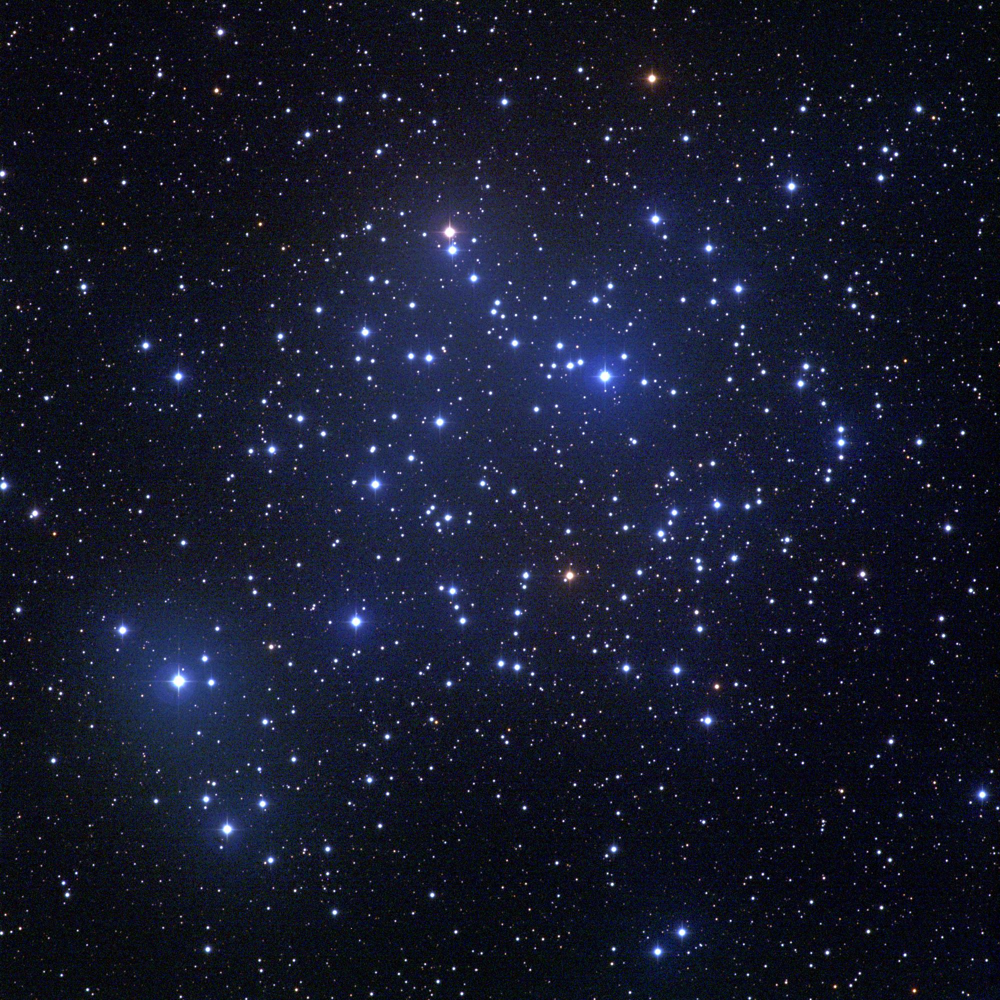

Select 8 bright stars, 8 intermediate stars, and 8 faint stars by clicking on the stars in the image below. A counter is below the image. Then click the "next" button.
Adjust the cluster parameters to match the fiduciary sequence to the stars that you selected. When you are finished, take a screen shot of your charts to submit.
Below is a list of all of the stars that you have selected and their associated data. The stars are listed in the order that you selected them. Click the back button to return to the activity.

Bright stars selected: 0
Intermediate stars selected: 0
Faint stars selected: 0
Cluster parameters:
Distance (parsec): 398
Color-color plot
Color-magnitude diagram
Stars Selected:
| X | Y | (B-V)_0 | (U-B)_0 | Magnitude | m_U | m_B | m_V | m_R | Radius | U-B | B-V | V-R |
|---|